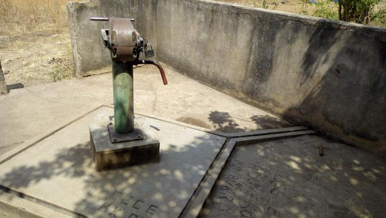
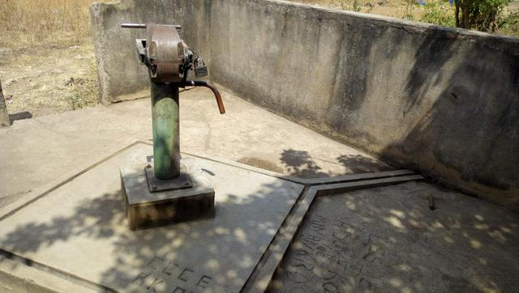
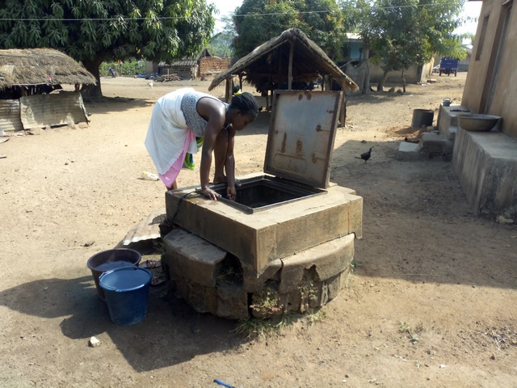
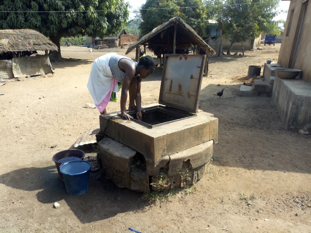

Minankro
Nord de Bouaké
| Informations générales | |
|---|---|
| Nom de la localité : | Minankro |
| Population : | 1800 habitants |
| Aire : | nd |
| Dessertes en eau potable | Totalement raccordé au réseau SODECI |
| Gestion des excrétas | Assainissement autonome |
Présentation de la localité
Situé à la sortie nord de Bouaké, le village de Minankro est situé à environ 2 kilomètres du centre-ville. Sous l’appellation Minankro, on retrouve dans la réalité un ensemble de 03 villages dont Minankro, le village principal et les villages de Kongouêkro et Andokro. L’ensemble des 03 villages compte environ 1800 habitants.
Minankro dispose d’un groupe scolaire composé de 02 écoles. On y retrouve essentiellement des habitations de tous types : des habitations en parpaings en terre ou en ciment avec des tôles ondulées. Les populations sont généralement regroupées en concessions familles. En ce qui concerne les activités agricoles, les populations sont essentiellement agricoles et les principales spéculations recensées sont l’igname, le manioc, l’anacarde et les maraichers (tomate, piment, aubergine).
Socio anthropologie de la localité
Avec une voie principale traversant le village, Minankro est un village peuplé par les Pharis, sous-groupe Baoulé. La vie communautaire y est très développée et les trois villages sont composés de grandes familles. Le leadership de Minankro s’impose Kongouêkro et Andokro du fait déjà que c’est son nom que porte les deux autres villages. Le chef de Minankro est le central. Le village est dans le canton de Konankankro. Mais la ville de Bouaké se rapproche de plus en plus du village. Ce qui risque d’en faire un quartier d’ici peu. D’ailleurs, le corridor nord a été déplacé à environ 01 km après Minakro. Ainsi, de village on passera à un secteur de la ville de Bouaké. Toutefois, le village demeure intact dans son organisation sociale ; c’est-à-dire une chefferie, une notabilité ainsi que l’organisation des femmes et celle des jeunes. Ce sont là les différents représentants. Le chef de village se réfère au chef de canton dans la gestion de certaines affaires traditionnelles. «Nous appartenons à un canton. Et c’est là que nous rendons compte. Il est vrai que dans l’administration, certaines affaires sont gérées avec le sous-préfet. Mais dans la tradition, on se réfère au canton, au roi » (chefferie). A l’instar des autres communautés rurales, les femmes s’occupent des tâches ménagères et de l’approvisionnement en eau. « Notre travail est comme celui de nos sœurs des autres village autour de nous. On fait nos petites activités, champ, attiéké, petits commerces et on s’occupe de nos enfants » (Présidente des femmes). Avec la proximité de la ville, des personnes y vont travailler et reviennent au village le soir. La plupart de ces personnes, natives du village ont des champs comme les autres.
Etat des lieux des ouvrages d’alimentation en eau potable
Ouvrages existants
Le village est connecté au réseau de distribution d’eau de la SODECI et compte moins d’une cinquantaine de concessions abonnées. En termes d’hydraulique villageoise, Minankro compte actuellement 03 forages dont 02 fonctionnels et 06 puits traditionnels. Les 02 forages fonctionnels se trouvent dans les villages de Kongouêkro et Andokro. Le forage de Minankro depuis sa création n’a jamais été équipé. Les forages, construits lors des premiers programmes d’hydraulique villageoise en Côte d’Ivoire datent de 1976 et sont équipés de pompes de marque ABI. Du fait de leurs âges avancés, les pompes tombent régulièrement en panne à cause de la vétusté des pièces en fer. Les pompes tombent en moyenne 2 à 3 fois dans l’année. L’enquête sanitaire réalisée au niveau des forages indique que ces points d’eau ne présentent pas de risques pour la santé des populations. Les 02 points d’eau relativement bien entretenu et bien assainis. Le seul problème relevé au niveau du forage de Kongouêkro est relatif au goût de l’eau. L’eau a un goût un peu salé et métallique. Cela est dû est à la rouille des tuyaux de refoulement. Il faut parfois pomper 3 à 5 min tous les matins pour éliminer les premières eaux avant la collecte de l’eau. Au nombre de 6 dans le village, les puits sont soit de type traditionnels ou maçonnés et ont tous été construits par des particuliers pour les usages domestiques au niveau des ménages mais ils sont accessibles aux autres membres de la communauté. Ces puits sont peu profonds (5 m en moyenne) et l’eau est disponible seulement dans les puits qu’une partie de l’année. Tous les puits tarissent entre janvier et février. La colonne d’eau mesurée dans ces ouvrages lors de nos enquêtes variait entre 0,5 et 0,8 m. Les enquêtes sanitaires ont porté sur 3 des 06 puits du village. Elles révèlent que ces points d’eau ont une vulnérabilité élevée (score de 6) par rapport aux risques de contamination. Les sources de contamination potentielle observées sont liées à la proximité des toilettes, aux couvercles inadaptés, aux défauts d’étanchéité de l’aménagement de surface (margelle fissurée) et l’absence de drainage. Les analyses de la qualité de l’eau révèlent l’absence d’une pollution azotée dans les échantillons d’eau mais la présence du fluor en des concentrations relativement élevées (1,4 mg/L) proche du seuil admissible pour l’eau de boisson. L’analyse bactériologique des eaux révèle que 2 puits sur 3 sont contaminés par E coli. Les puits ne sont généralement pas traités à l’eau de javel ou quand ils le sont, le traitement est irrégulier et ne se fait pas selon les règles de l’art. Le village dispose aussi d’un marigot situé de l’autre côté de la RN1.
 

 

Pratiques et modes d’approvisionnement en eau
Le village étant connecté au réseau de la SODECI, les modes d’approvisionnement dépendent de la disponibilité des compteurs et de la perception de la qualité de l’eau de la SODECI. Les habitations abonnées au réseau de distribution utilisent l’eau pour toutes les tâches domestiques et la boisson. Cependant, lorsque la qualité de l’eau au robinet est jugée insatisfaisante par les ménages, elle est utilisée pour les autres besoins domestiques et l’eau des forages est alors utilisée pour la consommation. L’eau des forages sert à tous les usages notamment au sein des ménages ne disposant pas de compteurs. Les puits et le marigot servent principalement aux tâches domestiques (la lessive principalement pour le marigot) mais peuvent parfois servir à la boisson en cas de longue pénurie et de panne de la pompe.
Gestion des points d’eau
Pour les PMH, la gestion des 02 points d’eau est quasiment la même. Deux comités de gestion composés de 10 personnes dont 2 hommes et 08 femmes se charge de la gestion des 02 pompes. Ils s’occupent de l’entretien de pompes (l’hygiène autour des points d’eau et la réparation) et de la collecte et gestion de la caisse de l’eau. L’eau est vendue dans le village à 10 F CFA le bidon de 20 litres. Ces comités fonctionnent relativement bien, les pompes sont réparées dans un délai de 48 heures après les pannes dans la plupart du temps. L’efficacité de gestion cette gestion des PMH vient d’une longue expérience selon le chef de village. : « Avant, ce sont les hommes qui géraient la pompe. Mais après, on a vu que ce n’était pas trop bien, le nettoyage autour et aussi l’entretien ne se faisait pas bien. Les femmes ne se sentaient pas trop concernées. A un moment, il y a des gens du gouvernement qui sont venus nous dire que le comité doit être composé seulement de femmes. On a enlevé les hommes. Mais après, on a vu que ça ne marchait pas bien. Les femmes font trop de petits palabres et cela ne fait pas avancer les choses. Nous sommes donc revus à l’ancien système. J’ai mis un de mes représentants pour superviser et un homme de chacun des autres villages à côté des femmes ». Quant aux puits, leur gestion et entretien est uniquement à la charge des propriétaires. La collecte de l’eau est gratuite. Les travaux d’entretien se résument au nettoyage autour du puits, au curage et à l’augmentation de la profondeur quand celui-ci tarit. Pour la SODECI, « chacun paye sa facture en fonction de sa consommation », (focus hommes). Par ailleurs, « les gens ne vont plus vraiment puiser dans le marigot. Au départ, c’était une source d’approvisionnement. Les femmes y allaient. Maintenant, elles ne le font plus. Quelques rares y vont pour faire la lessive ». (Leader jeunesse).
Personnes ressources
- Chef de village Minakro
- Président des Femmes
- Présidente du comité de gestion
Gestion des excrétas
Minankro ne dispose pas d’un réseau de drainage des eaux de pluie et usées. Ces eaux sont généralement déversées dans les cours des maisons. En ce qui concerne les infrastructures, le village ne dispose pas de point de collecte d’ordures ménagères. Cette situation oblige la communauté à déverser les ordures ménagères dans la forêt juste derrière le village. De plus, il faut noter que la majorité des villageois ne disposent pas de toilettes dans leurs maisons bien que l’on retrouve tous les types de latrines (latrines à fosse sèche, fosses septiques) dans le village. En effet, les anciennes constructions (cases) ne prévoyaient pas de toilettes, du coup, les villageois vont faire leur besoin dans la forêt. . Il faut également noter la présence d’animaux dans tout le village. N’ayant pas d’enclos, ceux-ci défèquent et urines n’importe où dans le village. On observe également des excréments d’animaux partout dans le village et également à proximité des points d’eau.
Desideratas des populations
| Type d'entretien | Date |
|---|---|
| Entretien individuel Chef de village Minakro | 15 janvier 2019 |
| Entretien individuel Président des Femmes | 15 janvier 2019 |
| Entretien individuel Présidente du comité de gestion | 15 janvier 2019 |
| Focus group hommes Minakro | 15 janvier 2019 |
| Focus group femmes Minakro | 15 janvier 2019 |
Les entretiens ont montré que la population utilise les PMH pour les activités quotidiennes de chaque ménages (boisson, lessive, cuisine), l’eau de SODECI et les puits privés. Il ressort des entretiens que les populations désirent avoir l’HVA afin de s’assurer de la présence permanente de l’eau potable. « Nous voulons un petit château pour Minakro ». Ce terme est ressorti aussi bien dans les entretiens individuels que dans les focus groupe de chaque catégorie ayant fait l’objet de notre enquête. La raison principale est que « les pompes sont vieilles et tout le monde ne reçoit pas l’eau de SODECI quand elle vient. Ceux qui sont sur la côte ne reçoivent pas l’eau. C’est dans les secteurs du bas qu’on a l’eau de SODECI. Donc, si on a une château, tout le monde sera servi ». (Chefferie). « De la même manière on arrive à bien gérer les pompes, on va gérer de la même manière le château pour que tout le monde soit bien servi », rassure la présidente du comité de gestion.
Tensions ressenties lors des entretiens
Tensions générales
Les populations de Minakro vivent en parfaite harmonie car les habitants sont homogènes. Aussi, dans les villages, les conflits sont parfois sanctionnés de lourdes amende généralement en nature (boisson, cabris, mouton), jusqu’à l’excommunication. Ces balises sont mises dans les communautés afin de réguler l’ordre pour le vivre ensemble. L’homogénéité de la population, les Baoulé Pharis permet de minimiser les conflits dans la communauté.
Tensions autour de l'eau
Les tensions majeures sont autour de la question de l’eau mais elles étaient fréquentes pendant la pénurie d’eau dans la ville de Bouaké cas des citernes d’approvisionnement en eau ONEP. Ces tensions se manifestaient par des injures entre les femmes dans les points d’eau publique. Mais il faut souligner que les conflits sont aussi fréquents autour des points d’eau dans le village, cette situation est due au refus de certaine personne à payer l’eau, refus de payer ses dettes, des sauts d’humeur, des problèmes de jalousie etc. comme disait le chef de communauté « les femmes quand elles sont seules, elles font trop d’histoires, c’est pourquoi il faut souvent des hommes dans le comité de gestion pour gérer les palabres ». En somme, il existe des tensions entre les femmes ; mais qui ne peuvent porter atteinte à la cohésion dans la communauté.
Tensions avec les localités voisines
Les habitants de Minankro vivent en parfaite harmonie avec les villages voisins, il n’y a pas de conflits ou tensions entre eux. Il faut retenir qu’il existe une fraternité entre les villages environnants car ils sont tous de la même ethnie, du même canton donc des frères.